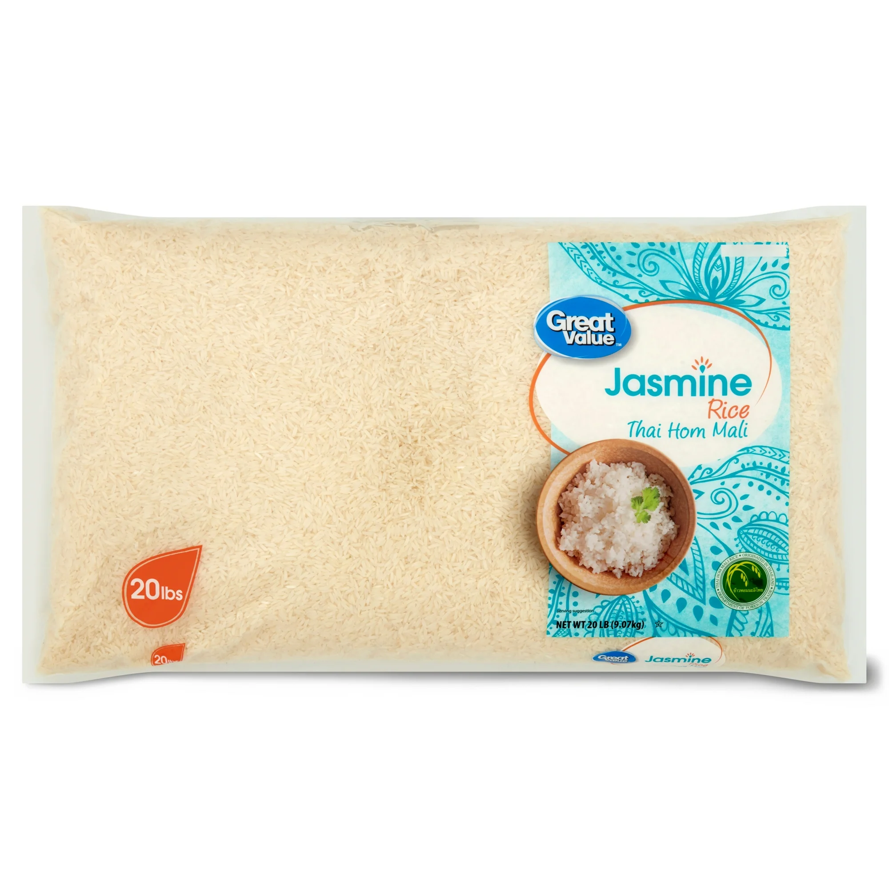
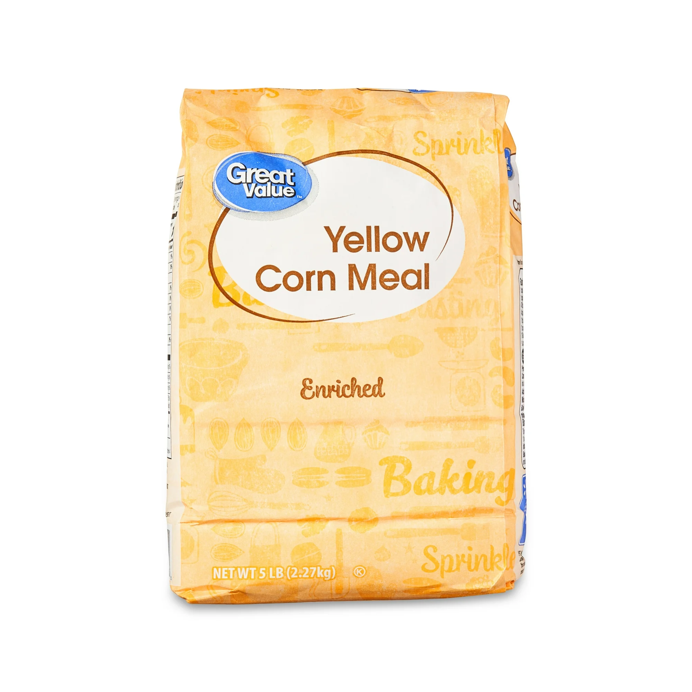
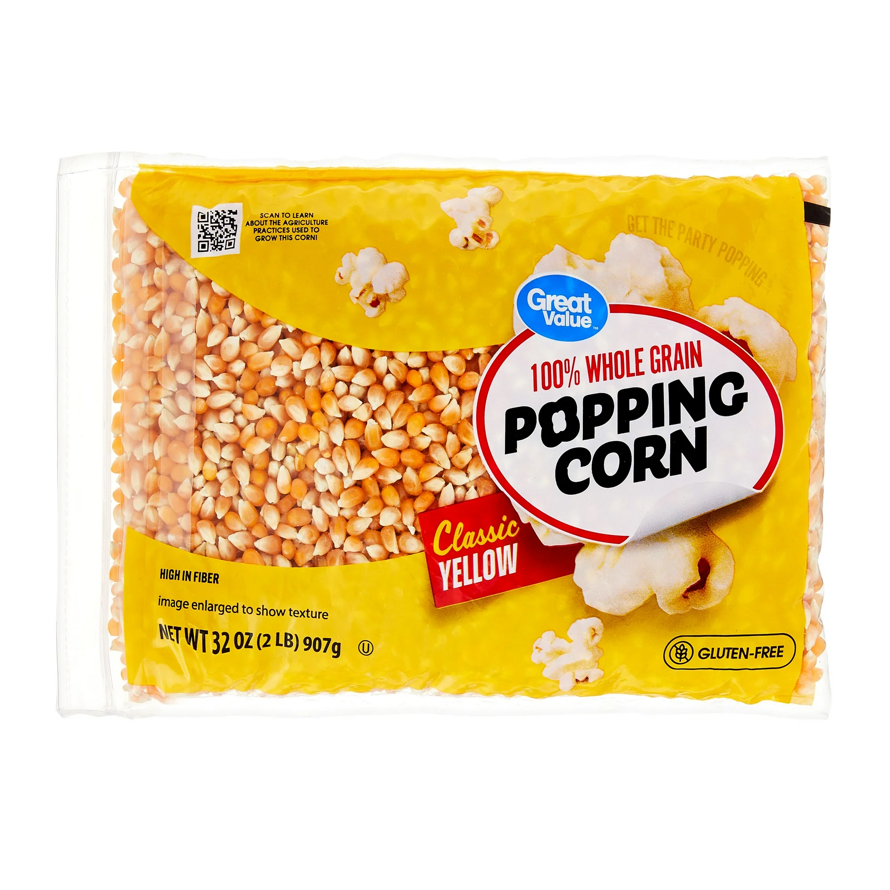
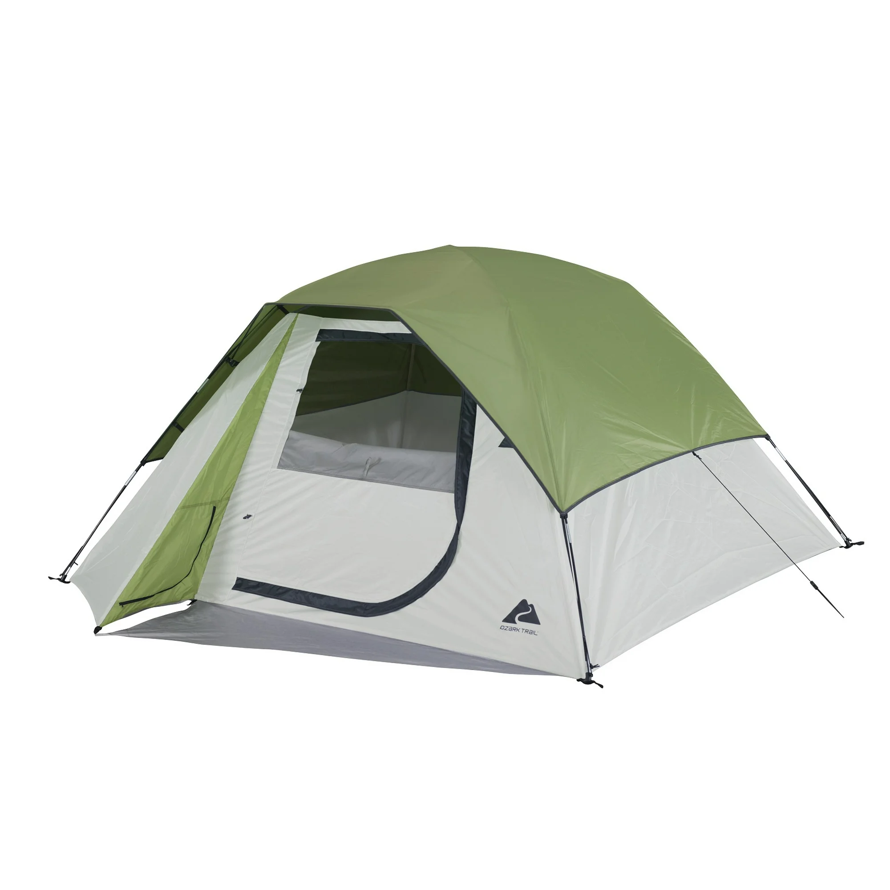

Janeiro 2025
Meus amigos,
Este ano estamos focados em manter e aumentar nosso kit de 72 horas. Um objetivo adicional é garantir um suprimento de 2 meses de alimentos para nossa casa. As necessidades pessoais de sua casa devem ser, é claro, o foco principal, enquanto você completa as metas mensais.
Estamos olhando para uma abordagem tripla para a preparação este ano. O objetivo inicial é a comida. Este mês o foco é no armazenamento de arroz e fubá. Com base na planilha da igreja para calcular armazenamento, isso equivale a 8 libras por pessoa de arroz e 4 libras por pessoa de fubá. Para crianças com menos de oito anos, a quantidade calculada é metade disso.
 Existem várias variedades de arroz que podem ser consideradas para armazenamento. Há arroz de grão longo - após cozido é firme e fofo. Tem entre 2-3 vezes mais comprimento que largura. Arroz de grão médio dos EUA é macio, úmido e pegajoso. Arroz de grão curto é muito pegajoso e às vezes chamado de arroz para sushi. Arroz integral é mais nutritivo, mas tem vida útil mais curta para armazenamento. Se armazenado em recipiente hermético, em local fresco e escuro, o arroz dura aproximadamente seis meses.
Arroz parboilizado, também conhecido como arroz convertido, é parcialmente pré-cozido. A principal vantagem do arroz parboilizado é que ele retém mais nutrientes comparado ao arroz branco, incluindo vitaminas B, ferro e cálcio. Um estudo da BYU encontrou que arroz polido e parboilizado mantêm nutrientes e sabor por até 30 anos.
 Existem vantagens e desvantagens no tipo de milho para armazenar. Enquanto tanto o fubá quanto os grãos de pipoca podem ser armazenados para longo prazo, os grãos de pipoca geralmente são preferidos devido à maior vida útil e versatilidade. Armazene corretamente para garantir carboidratos e nutrição disponíveis por períodos longos. Atenção: a pipoca NÃO deve ser moída em moinho de pedra (burr mill). Isso pode danificar as pedras. Use moinho de impacto ou liquidificador para moer. Evite comprar "milho de campo", que é grosso e difícil de moer.
 Grãos de pipoca e fubá têm múltiplos usos e dão mais variedade de alimentos a longo prazo. Pode estourar para um lanche ou moer para farinha para broa, pães e outras receitas. Também pode fazer polenta com fubá.
Use recipientes herméticos como potes de vidro, baldes plásticos ou baldes para alimentos com tampas bem fechadas. Armazene em local fresco, seco e escuro, longe de alimentos com cheiro forte. Por favor, ligue ou envie mensagem para dúvidas!
 Por fim, a importância de uma tenda e abrigo confiável não pode ser subestimada. Ter um lugar seguro e protegido para descansar e se abrigar em emergências pode salvar vidas e dar conforto em tempos difíceis.